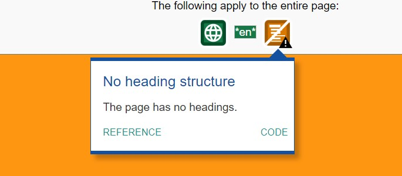
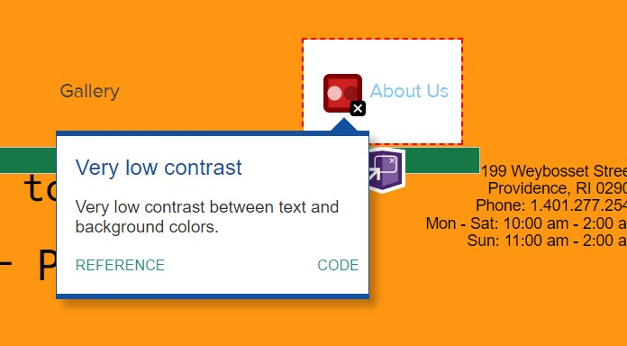
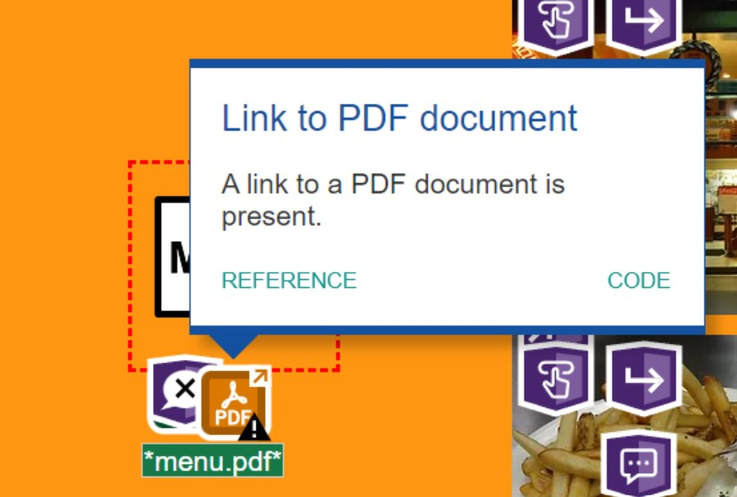
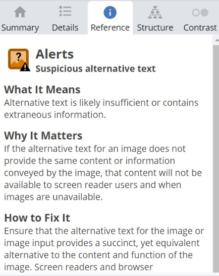
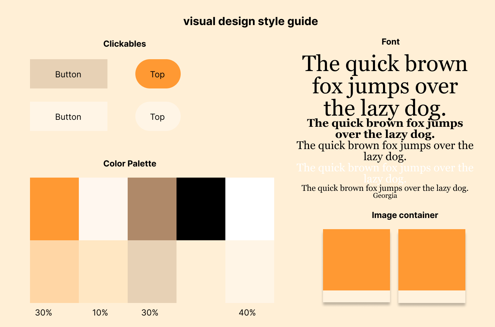

Accessibility
Results from WebAIM WAV:
- No headings. 
- Text color contrast is too low. 
- Text too small.
- “Menu” link to PDF might cause accessibility problems. 
- Alternative text is not used properly. 
There are no headings for the website, making it poorly structured.
The color contrast between the text and the background is too low, making it hard to read.
Some of the text is too small, also making it very hard to read.
The menu is linked to an external PDF file. I am not sure how to fix this though...
The alt description is not properly used. It might be better to add more descriptive text.
Part 2: Visual Redesign
Low-fidelity Wireframing
Visual Design Style Guide
High-Fidelity Prototyping
Warning: long images!


Annotations:
-
Menu problem:
For the container of the "menu" background, I use position: relative; so that I can keep a relative position with the button.
-
Overall responsiveness:
I also use display: block for each div because there are not many flex elements required (besides the gallery and the later info images, for which I use the row and column to adjust them better accordingly).
-
Overall responsiveness 2:
I'm using rem font size for h1, h2, and h3 so that they're relative to the root element and responsive on different device sizes while maintaining proper text hierarchy.
-
Overall responsiveness 3:
For side-by-side elements, such as the image and text in location & hours, I used the float:left and right. I also adjusted the margin for a better appearance.
-
Gallery display:
I adjusted the image sizes so that they will align better in the gallery. For the gallery layout, I referred to w3schools for the alignment and display.
-
Other problems: Alt text; text font, contrast and size; paragraph alignment
I have adjusted them accordingly. See the redesigned website for more details.
-
There are interactive elements on the page, though not many.
-
Menu problem:
When hovering above the menu button, its color changes and implies that it is clickable; when clicked, it links to the menu pdf file. I know it is not a good option, but since time is limited and I do not know much about interactive page construction, I will leave it as it was. Sorry.
-
Find improtant information:
When scrolling down, the “top” button appears on the right side. I used a little Javascript here (credit to w3schools.)
-
Misplaced Facebook link:
I have also linked the Facebook like button at the bottom, which is clickable. The code is from Facebook.
-
I initially wanted to use a navigation bar at the top/side, but since the original
website is relatively simple with only a few elements(menu, info, gallery and about us), I decided to discard the navigation bar.
Please see the code comments for more information and citations.
Many thanks to w3schools! I would not have finished it without its amazing tutorials :') -
Menu problem:
Part 3: Responsive Redesign
Link:
Please notice that the actual phone layout is different from the low-fi and hi-fi prototype.
I originally wantted to have the gallery with one image each row,
but it seems that the gallery would be a little too long and the
user would have to scroll for quite a long time. And the display works well for two
images at the same time, so I decided to keep the actural layout design with
two images instead of one.